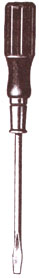
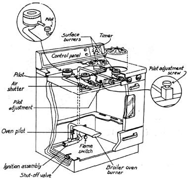

Energy Tips
A few simple repairs that might save you a service call.
A gas appliance, especially a kitchen range, is usually quite dependable, but a functioning knowledge of the basic range components is helpful, should a minor problem arise. If the appliance continues to work improperly after completing the basic repairs listed here, call a service technician. If you can smell gas before or after servicing the range, you have a gas leak and should notify a technician immediately.
Sometimes food particles or dirt accumulates in the tip of the pilot light and closes it off. This problem is easy to fix. Remove the range top to expose the pilot lights. Turn all stove controls off. Then remove the small cap or cover on the pilot lights and clean away any residue. Clear the gas opening in the pilot light by poking a straight pin into the small gas hole. Scrub the tubes leading from the burners to the pilot with a strong detergent and a stiff brush. Hold a lit match over the gas hole in the pilot light and the pilot should light. If it does not, check to make sure that the gas supply to the stove is on.
If the pilot flame is not steady and at least 1/8" above the pilot-light shield, it should be adjusted. Trace the gas supply line running to the pilot light in front of the stove. Where the tube joins the other valves, you will probably see an adjustment screw. Use a screwdriver to turn it counterclock wise to increase the pilot-light size. If after relighting the pilot, the burners do not work, call your gas company.
Most modern ranges have electronic ignition, recognizable by a clicking sound when you turn the burner on. If you hear the click, but the burner does not light, you may have a dirty pilot light electrode (a small, pointed metal rod between the tubes that lead to the burners).
First unplug the range, then clean the electrodes. Use a small brush to clean anything blocking the igniter. To reach it you may have to remove the metal bridge or cover over the electrode.
The oven pilot light is usually located in the back of the oven. You can see it if you open the broiler compartment. If it has gone out, clean and relight it by following the steps outlined above for the stove-top burner light. Use a long wooden match to relight the oven pilot.
-Adapted from: Quick Fix Home Repair Manual (HarperCollins, 1989) by Katie & Gene Hamilton. Copyright © 1990 by Katie & Gene Hamilton.
|
 |
 |
|